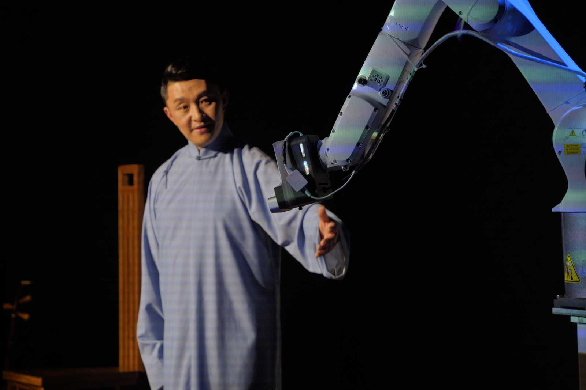
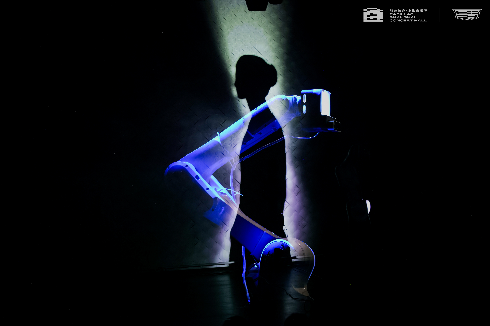

Melodic Echo Odyssey
An experimental narrative concert that merges AI-generated music, robotic arm choreography, computer vision, and Chinese Pingtan to reinterpret cultural memory. Inspired by the storytelling tradition of Pingtan, the performance weaves traditional influences with new media into an immersive journey through history and sound. Premiered at Cadillac Shanghai Concert Hall in April 2024.
I choreographed the robotic arm and operated it in real time during the performance.




Performance stills, courtesy of LIMAGE Studio and Cadillac Shanghai Concert Hall.